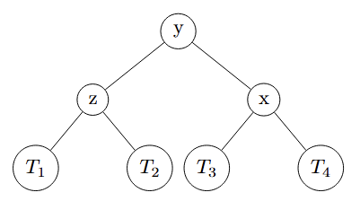
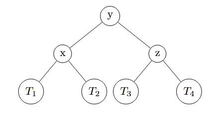
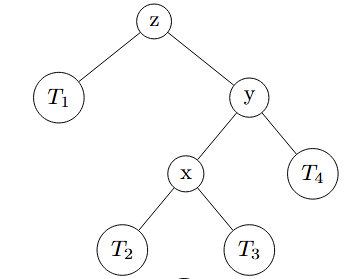
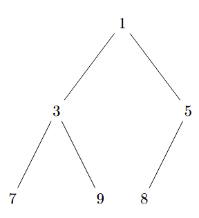

数据结构和算法复习笔记¶
\(By \ \ \textbf{cc98 \_Marblue\_}\)
Attention
试卷结构: 5题(100分) + 附加题(10分) 参考教材: Data Structure and Algorithm Analysis in C++
考试范围¶
- 加亮为附加题范围, 前五题不考
- 不考cpp相关语法, 只要求实现伪代码(或者也可以用中文描述算法)
- Chapter 2 算法分析 (平均复杂度不考, 只考worst case)
- 递归情形(写出, 证明)
- 数学归纳法
- Chapter 3 链表, 数组, 栈, 队列
- Chapter 4 树(重点, 4.1 - 4.4): BST, AVL Tree 及其功能实现 / 复杂性分析; B-Tree, Splay Tree
- Chapter 5 Hashing(重点, 5.1 - 5.4): Separate Hashing, Hashing Without Linked Lists, Re - Hashing, Cuckoo Hashing, Hopscotch Hash
- Chapter 6 Priority Queue, Heaps(6.1 - 6.3): 二叉堆; 注意结合图论算法 / 栈的结合
- Chapter 7 Sorting(重点, 7.4 - 7.8, 7.11): Heapsort, Mergesort, Quicksort及其性质证明 ShellSort
- Chapter 8 并查集: 整章
- Chapter 9 图论算法(重点9.3, 9.5.1)
- Chapter 10: 主要作为和其他章节结合实现, 另外可能考察Dynamic Programming
Chapter 2 算法分析¶
- 定义1.1: 输入规模 \(n \in N\) , 所需时间 \(T(n)=O(f(n))\), 若存在 \(c,n_0\) 使得当 \(n>n_0\) 时, 有 \(T(n)\leq c \cdot f(n)\)
- 定义1.2: \(T(n)=\Omega (g(n))\), 若存在\(c>0, n_0∈N\), 当 \(n>n_0\) 时, 有 \(T(n)\geq c\cdot g(n)\)
- 定义1.3: \(T(n)=\Theta (h(n))\), \(iff\) \(T(n)=O(h(n))\) 且有 \(T(n)= \Omega(h(n))\) 概括: \(O(f(n))\)为上界, \(\Omega(f(n))\)为下界, \(\Theta(f(n))\)为同阶
复杂度运算¶
- 顺序: \(O(f(n) + g(n)) = O(max(f(n), g(n)))\)
- 嵌套: \(O(f(n) \times g(n)) = O(f(n)) \times O(g(n))\) 直观理解: 两层1-n的for循环, 复杂度为\(n^2\)
- 条件判断: 对于 if - else 条件判断, 取最坏情况
- 常数运算: 直接忽略常数, e.g. \(O(2n) = O(n), O(1000) = O(1), O(\frac{n}{2}) = O(n)\)
分治策略¶
核心思想: 把大问题分为几个小问题, 从小问题中得出大问题的解答
e.g. 二分查找从小到大排序好的数组中某个元素的下标, 若不存在返回-1
| C++ | |
|---|---|
主定理(Master Theorem)¶
\(T(n) = \begin{cases} O(1), n=1\\ aT(\frac{n}{b}) + f(n), n>1 \end{cases}\)
直观理解: a代表每层递归分为几个子问题; n/b代表每个子问题的规模; f(n)代表该层非递归部分的代价
引入对比量: \(n^{\log _b a}\)
对于\(f(n)\)分为三种情况来计算:
- 若\(f(n)\)的阶数小于\(n^{\log _b a}\), 则说明递归项占主导位置, \(T(n) = O(n^{\log _b a})\)
- 若\(f(n)\)与\(n^{\log _b a}\)同阶, 则\(T(n) = O(n^{\log _b a} \cdot \log n)\)
- 若\(f(n)\)的阶数大于\(n^{\log _b a}\), 则说明非递归部分占主导位置, \(T(n) = O(f(n))上\)
e.g. 对于上面的二分查找, a = 1, b = 2, \(f(n) = O(1)\), \(n^{\log _b a} = 1\), 因此\(f(n)\)与\(n^{\log _b a}\)同阶, 采用主定理第二种情况, \(T(n) = O(1 \cdot \log n) = O(\log n)\)
同理, 可以用数学归纳法证明:
\(T(n) = T(\frac{n}{2}) + O(1), 则存在常数d使得T(n) \leq T(\frac{n}{2}) + d \\ 要证: T(n) = O(\log n) \\ 则要证明 T(n) \leq k \cdot\log n + c, c = const. \\ n = 1: T(1) \leq d , 显然可以使d \leq c, 成立 \\ n \geq 2:T(n) = T(\frac{n}{2}) + O(1), 根据假设, T(\frac{n}{2}) \leq k\cdot\log \frac{n}{2} + c = k(\log n -1)+c \\ \Rightarrow T(n) \leq T(\frac{n}{2}) + d \\ \ \ \ \ \ \ \ \ \ \ \ \ \ \ \leq k(\log n -1)+c + d \\ \ \ \ \ \ \ \ \ \ \ \ \ \ \ = k \log n - k + c +d, 显然可取k \geq d, 则原式 \\ \ \ \ \ \ \ \ \ \ \ \ \ \ \ \leq k \cdot\log n + c \\ 证毕.\)
Chapter 3 链表, 数组, 栈, 队列¶
链表¶
\(head \rightarrow ptr_1(data_1) \rightarrow ptr_2(data_2) \cdots \rightarrow prt_n(data_n) \rightarrow nullptr\)
| 操作 | 说明 | 时间复杂度 |
|---|---|---|
| 按下标访问 | 从头遍历 | \(O(n)\) |
| 查找元素 | 顺序遍历 | \(O(n)\) |
| 在头部插入 | 不需遍历 | \(O(1)\) |
| 在尾部插入 | 有尾指针时\(O(1)\) | $ O(n) $ |
| 在指定节点后插入 | 已知节点 | \(O(1)\) |
| 删除头节点 | 直接修改指针 | $ O(1) $ |
| 删除指定节点 | 已知前驱 | $ O(1) $ |
| 删除指定值 | 需查找 | $ O(n) $ |
数组¶
| 操作 | 说明 | 时间复杂度 |
|---|---|---|
随机访问 A[i] |
已知下标 | \(O(1)\) |
| 修改元素 | 已知下标 | \(O(1)\) |
| 查找(无序) | 顺序扫描 | \(O(n)\) |
| 查找(有序) | 二分查找 | \(O(\log n)\) |
| 插入(末尾) | 已知容量且不扩容 | $O(1) $ |
| 插入(中间/开头) | 需整体移动 | \(O(n)\) |
| 删除(末尾) | 直接删除 | \(O(1)\) |
| 删除(中间/开头) | 需整体移动 | $ O(n) $ |
栈¶
先进后出
| 操作 | 说明 | 时间复杂度 |
|---|---|---|
入栈 push |
在栈顶插入 | \(O(1)\) |
出栈 pop |
删除栈顶 | \(O(1)\) |
查看栈顶 top |
查看且不删除 | \(O(1)\) |
判空 empty |
是否为空 | \(O(1)\) |
| 查找元素 | 非典型操作 | \(O(n)\) |
e.g. 后缀表达式求值, 作业DS-3
直观理解: 对于后缀表达式3 5 2 - * 7 + 0.5 ^
| 元素 | 操作 | 栈中元素 |
|---|---|---|
| 3, 5, 2 | 存入栈 | (3, 5, 2) |
| - | 从栈顶弹出两个元素进行运算, 即5 - 2 = 3, 存入栈 | (3, 3) |
| * | 从栈顶弹出两个元素进行运算, 即3 * 3 = 9, 存入栈 | (9) |
| 7 | 存入栈 | (9, 7) |
| + | 从栈顶弹出两个元素进行运算, 即9 + 7 = 16, 存入栈 | (16) |
| 0.5 | 存入栈 | (16, 0.5) |
| ^ | 从栈顶弹出两个元素进行运算, 即16 ^ 0.5 = 4, 存入栈 | (4) |
因此结果为4
队列¶
先进先出
| 操作 | 说明 | 时间复杂度 |
|---|---|---|
入队 enqueue |
在队尾插入 | \(O(1)\) |
出队 dequeue |
删除队头 | \(O(1)\) |
| 查看队头 | 不删除 | \(O(1)\) |
| 判空 | 是否为空 | \(O(1)\) |
| 查找元素 | 非典型操作 | \(O(n)\) |
Chapter 4 树¶
树的结构通常由以下术语描述: - 根节点 - 父节点 - 子节点 - 兄弟节点: 属于同一父节点的子节点 - 叶节点: 无子节点的节点 - 节点的度(degree): 子节点数量 - 树的度: 所有节点的度的最大值 - 树的深度: 树到最深节点的路径长度
二叉搜索树(Binary Search Tree, BST)¶
性质: 所有比某个节点的值小的节点一定在该节点左侧, 反之在该节点右侧

假设基本结构如下:
| C++ | |
|---|---|
Search¶
伪代码实现:
Insert¶
伪代码实现:
| C++ | |
|---|---|
findMin / findMax¶
伪代码实现:
| C++ | |
|---|---|
Delete¶
对于给定的key, 删除该节点, 要求返回删除后该位置为哪个节点.
分三种情况: 1. 若为叶节点, 则直接删除; 2. 若有一个子节点, 则用子节点代替; 3. 若有两个子节点, 可从左子树中找最大值或从右子树中找最小值来代替;
伪代码实现:
AVL Tree¶
- 实际上是带有自平衡的二叉搜索树
定义: 空树高度为-1
平衡因子: 对于任意节点, 左右子树的高差不能超过平衡因子
若发生不平衡, 分为以下四种情况(此处假设T1, T2, T3等都是同等高度的子树):
1. 左旋转
原本的树：

可以发现, 在z这个节点出现了不平衡. 于是对于z - y进行左旋
左旋后:

2. 右旋转
原本的树:

同理, 对于z - y进行右旋, 右旋后:

3. 左 - 右双旋转
原本的树:

可以看出, 在z处不平衡, 于是对x - y - z进行旋转, 先对x - y左旋, 再对x - z右旋, 得到新树如下:

4. 右 - 左双旋转
原本的树:

同理, 先对x - y右旋, 再对x - z左旋:

复杂度概括:
| 操作 | 复杂度 |
|---|---|
| 查找 Search | \(O(\log n)\) |
| 插入 Insert | \(O(\log n)\) |
| 删除 Delete | \(O(\log n)\) |
| 旋转调整 | \(O(1)\) |
Chapter 5 Hashing¶
核心思想: 用空间换时间, 用一个函数, 把关键字(key)直接映射到数组下标
$Index: 0 1 2 3 4 5 \ldots m-1\ Table\,: _ _ _ _ _ _ \,\ldots _ $
定义一个函数：
用于将某个key值变为索引index
\(\Rightarrow\)因此可发现, 在哈希表满之前, 所有操作都是 \(O(1)\) 的
Hashing Function¶
常见的Hashing函数:
1. 除留余数法
2. 乘法方法
3. 多项式哈希(对于字符串)
Separate Chaining¶
核心思想: 当发生冲突时, 在每个位置存放一个链表用于存放冲突的值
定义: 负载因子\(\lambda = \frac{N}{M} = \frac{元素数量}{表大小}\)
数据结构实现:
| 操作 | 平均情况 | 说明 |
|---|---|---|
| 查找失败 | \(O(λ)\) | 平均遍历 λ 个节点 |
| 查找成功 | \(O(1 + \frac{\lambda}{2})\) | 平均遍历 \(1 + \frac{\lambda}{2}\) 个节点 |
| 插入 | $O(1) $ | 直接加到链表末尾 |
| 删除 | $ O(λ) $ | 需要先查找 |
Open Addressing (开放地址法)¶
核心思路: 所有数据都直接存在数组里. 如果发生冲突就去找下一个空位
Open Addressing 一般要求 λ < 0.5
常见的开放地址法¶
Linear Probing (线性探测)¶
思路: 当发生冲突时, 直接尝试相邻的下一个位置, 直到找到第一个空位
Quadratic Probing (二次探测)¶
思路: 当发生冲突时, 逐个尝试第\(i+1^2, i + 2^2, i+3^2, \cdots\)个位置, 直到找到第一个空位
Double Hashing (双重哈希)¶
思路: 当第一个哈希函数索引到的位置发生冲突的时候, 尝试第二个哈希函数
删除方法¶
为什么常规的删除不适用:
比如一个值\(val\)一开始被映射到了第 \(hash(val) = k\) 个位置, 后面使用开放寻址法移动到了另一个位置\(k'\); 接着, 我们删除了原本在第 \(k\) 个位置上的元素 但是当想用常规方法删除时, 我们计算 \(hash(val) = k\), 随后发现第k个位置为空, 因此认为val不存在哈希表中 - 显然错误
因此, 我们对于每个位置需要引入一个新的变量来表示这个位置的状态, 比如用int type
- type = 0 // 代表该位置从未被占用过
- type = 1 // 代表该位置被占用
- type = -1 // 代表该位置曾经被占用, 当前为空
这样, 当想要执行删除操作的时候就可以先查看该位置上的type, 再进行判断
Chapter 6 Priority Queue (Heap)¶
这里6.1 - 6.2 主要讲解的是用无序 / 有序链表或BST来实现Priority Queue, 缺点较多, 也不是重点(叠个甲:我猜的,不负责,有时间还是得看一下). 这里就写6.3二叉堆了
二叉堆的性质¶
基本性质:
- 二叉堆一定是一颗完全二叉树, 即除了最后一层每一层都完全填满, 且最后一层从左到右依次填充
- 对于有 \(n\) 个节点的二叉堆, 我们认为该二叉堆高度为 \(\log n\)
排序性质:
- 对于最小堆, 最小元素始终在堆顶, 且它小于等于任何一个它的后代; 相反得到最大堆; 除了堆顶外其余节点的数据不和BST一样要求有序. 下图分别为最小堆和最大堆
 
- 建立索引: 可以用一个数组来存放堆中的元素. 比如用
a[]存放左图中的最小堆, 定义a[0]不存在, 接着把二叉堆从上到下, 从左到右排序, 那么a[1] = 1; a[2] = 3; a[3] = 5; a[4] = 7; a[5] = 9; a[8] = 8
二叉堆的操作¶
以最小堆为例
Insert¶
对于需要插入的值x 1. 首先, 在数组的最后插入x 2. 随后向上检查是否满足 每个节点都小于等于它的后代 的特点 3. 若不满足, 交换不满足的两个元素的顺序
复杂度: \(O(\log n)\)
e.g. 50, 30, 70, 10, 40, 60, 20 从头建堆后为(按索引排序, a[0]处为-1): -1, 10, 30, 20, 50, 40, 70, 60
代码实现:
deleteMin¶
由于最小元素始终在堆顶, 因此只需要删除堆顶元素. 接下来我们需要维护这个二叉堆, 让它重新变成一个二叉堆 1. 删除堆顶元素 2. 取最后一个元素变为堆顶 (原因是: 这样堆仍然是一个完全二叉树) 3. 修复排序, 逐个从堆顶向下检查, 选择较小的一个元素交换位置
时间复杂度: \(O(\log n)\)
e.g. 初始堆:
维护后变为:
代码实现:
buildheap¶
给定 \(n\) 个元素, 将其构建成一个二叉堆
方法1：逐个插入
- N 次 insert: 每次 \(O(log n)\)
- 总时间：\(O(n \cdot\ \log n)\)
方法2：更高效的方法
- 先将所有元素放入数组（只保证结构性质）
- 从最后一个非叶子节点（
currentSize / 2）开始, 向前逐个执行 percolateDown - 叶子节点不需要处理（没有子节点, 已满足堆序性质）
复杂度：\(O(n)\)
e.g. 初始数组：
建堆后变为：
Text Only
代码实现：
Chapter 7 Sorting 排序算法¶
ShellSort¶
基本思想¶
比较和交换相距较远的元素, 一次消除多个逆序对.
算法步骤¶
- 选择一个增量序列, 一般选择\(1, 3, 7, ..., 2^n-1\)
- 对于每个增量 \(h_k\), 将数组分成 \(h_k\) 个子序列, 对每个子序列进行插入排序
- 逐渐减小增量, 直到 \(h_1 = 1\)
e.g. 输入数组：
[81, 94, 11, 96, 12, 35, 17, 95, 28, 58, 41, 75, 15]（13个元素）使用增量序列：5, 3, 1
代码实现：
HeapSort¶
本质上是对一组数据建堆然后一个个deletemin (deletemax), 略
复杂度: \(O(n\cdot \log n)\)
MergeSort¶
基本思想¶
将原数组不断二分拆解, 直到每个子数组里只有1个元素; 然后根据拆解顺序对于每个子数组内的元素进行排序并合成新数组;
算法步骤¶
e.g. 输入数组：
[8, 3, 2, 9, 7, 1, 5]
代码实现:
QuickSort¶
核心思想¶
先选中一个基准(pivot), 然后根据这个pivot的值把它放到合适的位置上, 然后对于pivot左侧和右侧的数组做相同操作;
常见的方法是:
1. 先选定pivot值(一般是中位数 / 第一个值 / 最后一个值 / 根据三段法取中位数)
2. 设定两个指针(left, right)分别指向需要排序的部分的最左侧 / 最右侧
3. 让left指针找第一个大于等于pivot的值的位置, right指针找第一个小于等于pivot值的位置, 再交换两个指针上的值, left++, right++(防止死循环); 直到left >= right为止
4. 递归排序
算法步骤¶
e.g. 输入数组：
[8, 2, 3, 9, 7],left指向8(下标0),right指向7(下标4) , 以中位数作为pivot
伪代码实现:
Bucket Sort / Radix Sort¶
Bucket Sort¶
假如有n个正整数需要排序(\(A_1, ..., A_n\)), 那么用一个长度大于\(max\{A_1, ..., A_n\}\)的数组a(比如设长度为\(m\)), 对于每个\(A_i\), a[\(A_i\)]++, 最终的排序结果就是把对应输出多少个\(A_i\)
e.g. 需要排序的数组arr: [1, 2, 6, 1, 6, 8, 2, 4, 7], 有一个长度为10的数组a, 初始状态每个位置均为0
复杂度: \(O(m+n)\)
Radix Sort¶
由于对于较大的数据(比如就算只有两个元素1, 10000, 也需要长度为10001的数组, 严重造成浪费), 因此提出基数排序: 对于给定的n个数构成的数组arr, 也用一个长度为n的数组a.
简单基数排序¶
对于末尾数字没有重复的一组数据(比如001, 008, 027, 064, 125, 216), 只需要从个位到最高位进行简单的bucket sort. 比如对于这组数据, 先根据个位数字排序: - 001, 064, 125, 216, 027, 008
再根据十位上的数字:
- 001, 008, 027, 064, 216, 125
最后是百位上的, 得到最终结果:
- 001, 008, 027, 064, 125, 216
当然, 不可避免的是当数据变多的时候会出现某位上出现重复数据的现象(比如这里十位上的001和008), 那么就对每个位置建立一个队列(每个位置是一个vecotr), 先放入的元素最后先取出, 同样可以保持顺序
e.g. 对于329, 457, 657, 839, 436, 720, 355
- 桶[0]: [720]
桶[1]: []
桶[2]: []
桶[3]: []
桶[4]: []
桶[5]: [355]
桶[6]: [436]
桶[7]: [457, 657] ← 两个数, 按原顺序进入
桶[8]: []
桶[9]: [329, 839] ← 两个数字, 按原顺序进入- 桶[2]: [720, 329] ← 720先进, 因为上一趟720在329前面
桶[3]: [436, 839] ←
桶[5]: [355, 457, 657]- 桶[3]: [329, 355]
桶[4]: [436, 457]
桶[6]: [657]
桶[7]: [720]
桶[8]: [839]- 最终顺序: 329, 355, 436, 457, 657, 720, 839
伪代码实现:
Chapter 8 并查集¶
这章内容相对简单, 用老妖的话就是 对数学系的同学们不成问题
基本概念¶
一个关系\(R\)若满足自反 / 对称 / 传递, 就叫等价关系; - 自反: \(aRa , \forall a \in S\), 其中\(S\)是\(R\)的定义域 - 对称: \(if \ aRb, then \ bRa\) - 传递: \(if \ aRb, bRc, then \ aRc\)
在等价关系下, 元素可以自然地被划分为若干个互不相关的等价类. 那么就可以定义以下两种操作:
- find(x)返回包含元素 x 的集合的名称(等价类)
- union(a, b)如果 a 和 b 不在同一等价类，合并它们所在的等价类
基本数据结构¶
对于find和union, 可以用forest(很多棵树来实现)
初始状态下, 假设有八个元素(0 - 7), 那么就用一个长度为8的数组. 初始时每个位置都是-1
arr[] = [-1, -1, -1, -1, -1, -1, -1, -1]
- union(4, 5), 即把5合并到4上, arr变为[-1, -1, -1, -1, -1, 4, -1, -1];
- union(6, 7), 即把7合并到6上, arr变为[-1, -1, -1, -1, -1, 4, -1, 6];
- union(4, 6), 即把6及其附属合并到4上, arr变为[-1, -1, -1, -1, -1, 4, 4, 6];
- find(7), 即先找arr[7], 若不为-1, 则递归寻找arr[ arr[7] ];
代码实现:
优化方案¶
为了防止经过一系列操作之后形成了一个类似于单链表的树(树高为n), 因此在union操作时提出两种优化方案
Union By Size¶
在初始化数组时, 同样把每个位置都设置为-1, 且这个值的绝对值代表该处共有几个节点; 随后, 当发生union操作时, 比较两个节点的树高, 然后把节点数较小的合并到节点数更大的节点上去.
代码实现:
| C++ | |
|---|---|
此时find复杂度(单次): \(O(\log n)\) 直觉: 树高不可能超过\(\log n\)
Union By Height¶
同理, 只是把树高更小的树放到树高更大的树下. 注意, arr储存的是-height - 1
代码实现:
| C++ | |
|---|---|
Path Compression¶
简单粗暴: 由于union的复杂度已经基本无法降低了, 因此可以在find上进行优化. 优化方法是: 把一条查找路径上经过所有的点的父节点都设为根节点.
代码实现:
应用: Maze¶
一个迷宫本质上可以看做一个\(m\times n\)的网格; 把每格看做一个元素, 那么就构成了\(m\times n\)长度的数组;
本质上两个格子之间是否连通, 只需要检查find(a) == find(b)的结果, 若相等则说明两者是连通的; 如果不相等则说明两者之间不连通;
如果想要连通两个原本不连通的方格, 只需要union(a, b);


Chapter 9 图论¶
基础定义¶
图的表示方法: \(G(V, E)\), V表示端点, E表示边
图分为有向图和无向图
定义:
- 环: 起点与终点相同且无重复边的一个路径
- 不含环的图称为无环图
- 连通: 若对于一个图, 其中任意两个端点都至少存在一条路径使他们连接, 则这个图是连通的. 特别的, 对于有向图, 若满足上述条件, 则称为强连通的.
图的表示
-
用邻接矩阵(Adjacency matrix) 表示
-
对于任意的\((u,v)\in E\),
A[u][v] = 1, 否则为0; - 存储空间: \(\Theta(V^2)\).
- 当\(E = \Theta(V^2)\)时, 称为稠密图(dense);
-
当\(E = \Theta(V)\)时, 称为稀疏图(sparse), 此时对于空间的浪费极大
-
用邻接表(Adjacency list) 表示
- 用一个链表表示 e.g. 若一共五个节点, 2连通了4和5, 则链表的第二项就是\(2 \rightarrow 4 \rightarrow 5 \rightarrow nullptr\)
- 存储代价\(\Theta(V + E)\)
拓扑序
定义: 给一个DAG上的全部顶点一个排序, 使得如果存在一条从\(v_i\)到\(v_j\)的路径, 那么认为\(v_j\)在这个序中在\(v_i\)之后(\(v_i \leq v_j\))
入度(degree): 到达某个点的边的数量
找拓扑序的过程: 1. 首先找到入度为0的节点; 2. 然后删除该节点和与该节点相接的边, 再次寻找入度为0的节点, 以此类推
最短路径算法(Shortest-Path Algorithms)¶
定理: 若\(u\)和\(v\)之间的最短路径\(p_{uv}\), 含有两个互异的中间节点\(x\)和\(y\), 则\(x\)和\(y\)在\(p_{uv}\)中的路径\(p_{xy}\)一定是x和y之间的最短路径
证明: 若x和y之间有另一条路径\(p_{xy}'\), 且\(w(p_{xy}') < w(p_{xy})\), 那么:
此时\(p_{uv}\)不是最短路径, 矛盾;
Dijkstra算法¶
这部分可以去b站找个视频看看, 更加直观
对于一个非负边权图, 每条边有权重 \(w(u,v) \geq 0\), 从起点 s 出发, 求：
- d[v]: s -> v 的最短距离
- prev[v]: 最短路上 v 的前一个点（用来还原路径）
伪代码实现:
V: 1, 2, 3, 4, 5, ...
d: 0, \(\infin\), \(\infin\), \(\infin\), \(\infin\), ...
可以对照这个图看, 视频链接如下: 【图-最短路径-Dijkstra(迪杰斯特拉)算法】

引理1: 每一次从优先队列中取出的尚未被确定的顶点 u, 其当前距离 dist[u] 就是从源点 s 到 u 的最短路径长度, 以后不会再被改变
证明: 若对于取出的点u, 存在一条更短的路径\(P\), 长度L < dist[u]
则对于路径\(P\), 其中一定存在一个不存在于我们用dijkstra算法找出的路径中的点 \(x\), 且 \(x\) 的前驱是可以确定的(命名为 \(y\) );
又: 当 \(y\) 被确定, 从起点 \(s\) 到 \(y\) 的距离最短, 为dist[y]
边权非负 ⇒ dist[x] ≤ dist[y] + w(y,x)
又因为路径 P 更短 ⇒ dist[x] < dist[u]
因此, 对于点 \(u\), 存在点 \(x\) 使得到达 \(x\) 的距离小于到达 $ u$ 的距离, 则算法应该返回点 \(x\) 而非点 $ u$, 矛盾
引理2: 假设 $ s$ 到 \(u\) 的最短路径 \(u.d = \delta(s, u)\), 那么对于任意\(v \in u.adj, v.d \leq u.d + w(u, v)\), 且 \(v.d \geq \delta(s, v)\).
证明: \(\ v.d \leq u.d + w(u, v) :\)
\(考虑松弛(u,v): \text{若不更新, 则已经满足; 若更新,} v.d =u.d + w(u, v);\)
证明: \(v.d \geq \delta(s, v):\)
\(1. \ 初始化时, v.d = \infty, 显然成立 \\ 2. \ 对于松弛操作, 考虑松弛(u,v): \\ \ \ \ \,若不松弛, 则仍然满足条件; \\ \ \ \ \,若松弛, v.d = u.d + w(u, v), 只需要证明它仍然不可能小于等于\delta(s, v), 后略;\)
复杂度: \(O((|V|+|E|)\log |V|)\)
Bellman-Ford算法¶
参考这个视频: 【Bellman-Ford最短路径算法】
适用于存在负边权且没有负权环的图.
核心思想: 以边为主要的考虑角色; 对于给定的一个图 \(G(V, E)\) 和起点, 从起点开始依次遍历所有点(\(V_1, ..., V_n\)), 随后遍历以 \(V_i\) 为起点的所有边并对于所有能够到达的点进行松弛, 这样称作一次迭代; 重复迭代直到最后一次迭代后没有路径发生变化.
代码实现:
复杂度: \(O(|E|\cdot |V|)\)
Floyd 算法¶
核心思想: 动态规划. 如果要一次性获取图中所有点对的最短路径代价, 那么就可以用一个\(|V|\times |V|\)的矩阵来表示; 接下来按照动态规划的五步走来考虑(DP的五步走可以参考另一个pdf):
1. 定义 \(D^{(k)}[i][j]\): 只允许使用顶点 \(k \in 1..n\) 作为“中间点”时，从 i 到 j 的最短路径代价
2. \(D^{(k)}[i][j] = \min (D^{(k-1)}[i][j], D^{(k-1)}[i][k] + D^{(k-1)}[k][j])\). 直观理解: 要么不走点k, 要么必须是从i到k, 再从k到j
3. 初始化dp: dp[i][i] = 0; dp[i][j] = +infinity, \(i≠j\)
4. 确定遍历顺序: 最外层是 k 从 1-n , 然后是 i 从 1-n , 最后是 j 从 1-n
5. 代码实现
ps: 如果要实现路径恢复, 可以另外维护一个矩阵
复杂度: \(O(|V|^3 )\)
Johnson 算法¶
核心思想: 一次性获取图中所有点对的最短路径代价要优雅, 不能暴力循环; 因此, 对于负边权图, 先添加一个点 \(s\) , 点 \(s\) 到 \(V\) 中所有点的边权为0; 接着以 \(s\) 为起点使用Bellman-Ford算法, 即可把所有边权变为非负(书中有证明, 此处略); 接着对于每个点运行一次Dijkstra就完成了
代码实现略去, 实质上是对于Bellman-Ford和Dijkstra算法的结合
复杂度: \(O(|V|\cdot |E|+|V|\cdot |E|\log V)\)
最小生成树(MST)¶
- 生成树: 连接所有点的树
- 最小生成树: 生成树中边权和最小的一颗树
最优子结构: 去掉最小生成树T中的一条边, 则 \(T\) 被分为 \(T_1\) 和 \(T_2\) 两棵树, 他们分别为对应的子图的最小生成树
\(\Rightarrow\)定理: 若\(T\)是图\(G(V, E)\)的最小生成树, 任意去掉\(T\)的一条边, 将其分为\(T_1\)和\(T_2\), 则\(T_1\)和\(T_2\)的全部顶点构成了\(G\)的两个子图, 且\(T_1\)和\(T_2\)分别为这两个子图的最小生成树
\(证明: \\ w(T) = w(T_1) + w(u, v) + w(T_2)\)
\(假设G1中存在生成树T_1', 且w(T_1') < w(T_1), \\则存在w(T') = w(T_1')+w(u,v)+w(T_2)\\这与T是最小生成树矛盾\)
重叠子问题: 移走T的任何一条边, 将T分为两个子树, 则可能存在\(|E(T)|\) 个子问题, 且都会引起\(|E(T_1)+E(T_2)|\)个二级子问题, 这是一个指数增长的过程
\(\Rightarrow\)贪婪特性: 任何一个局部问题的最优解, 必是整体问题最优解的局部
定理: 令 \(T\) 是 \(G(V, E)\) 的最小生成树, \(\forall a \in V\), 设 \((u, v)\) 是连接 \(a\) 和 \(V / A\)的最小权重边, 则必有 \((u, v) \in T\)
\(Proof: \\假设(u, v) 不在T中且边权是唯一的\\则T中必定存在唯一的边(u', v')连接A和V/A\\又: w(u, v) \leq w(u', v')\\ 则存在T', T'为T去掉(u', v')加上(u, v), 则T不是最小生成树\)
Prim算法: 根据贪婪特性来求最小生成树的算法
伪代码:
最短路径算法复杂度概括¶
设点数为 n, 边数为 m： * Dijkstra * 二叉堆：\(O((n+m)\log n)\) * 朴素实现：\(O(n^2)\)
-
Bellman–Ford
-
\(O(nm)\)
-
Floyd–Warshall
-
\(O(n^3)\)
-
Johnson
-
Bellman–Ford + n 次 Dijkstra
-
\(O(nm + n(m+n)\log n)\) 常简写为 \(O(nm\log n)\)
-
Prim（MST）
-
二叉堆：\(O((n+m)\log n)\)
- 朴素实现：\(O(n^2)\)